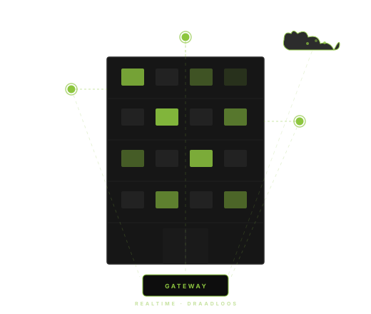

Sensing as a Service
Van hardware tot dashboard. U zegt wat u wilt meten, wij regelen de rest — volledig draadloos, vaste prijs per sensor per jaar.
Lees meerIoT · Data · AI
End-to-end IoT-oplossingen — van sensor tot dashboard en AI-gestuurde analyses voor uw gebouw.

Drie samenhangende diensten die samen één coherent verhaal vormen voor uw organisatie.
Van hardware tot dashboard. U zegt wat u wilt meten, wij regelen de rest — volledig draadloos, vaste prijs per sensor per jaar.
Lees meerIntegreer betrouwbare sensordata in uw eigen product of dienst. Wij bouwen, leveren en beheren het sensornetwerk — u focust op uw klant.
Lees meerHaal meer uit uw data. Wij ondersteunen het opstellen van onderbouwde adviesrapporten — met AI als betrouwbare assistent.
Lees meerSinds we met iotta werken, hebben we 100% inzicht in ons binnenklimaat zonder dat onze IT-afdeling er omkijken naar heeft. Het werkt simpelweg altijd.
— Naam Achternaam, Facility Manager · Organisatienaam